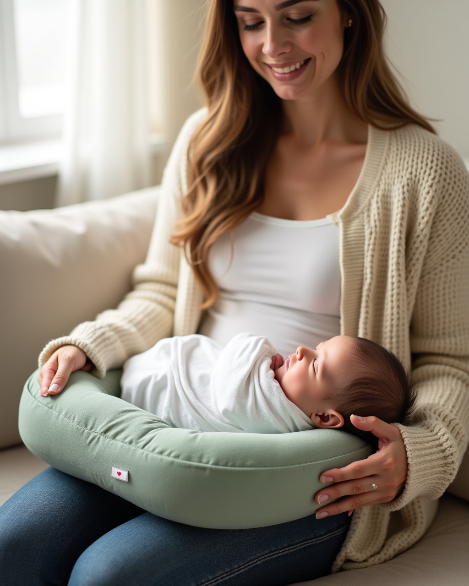
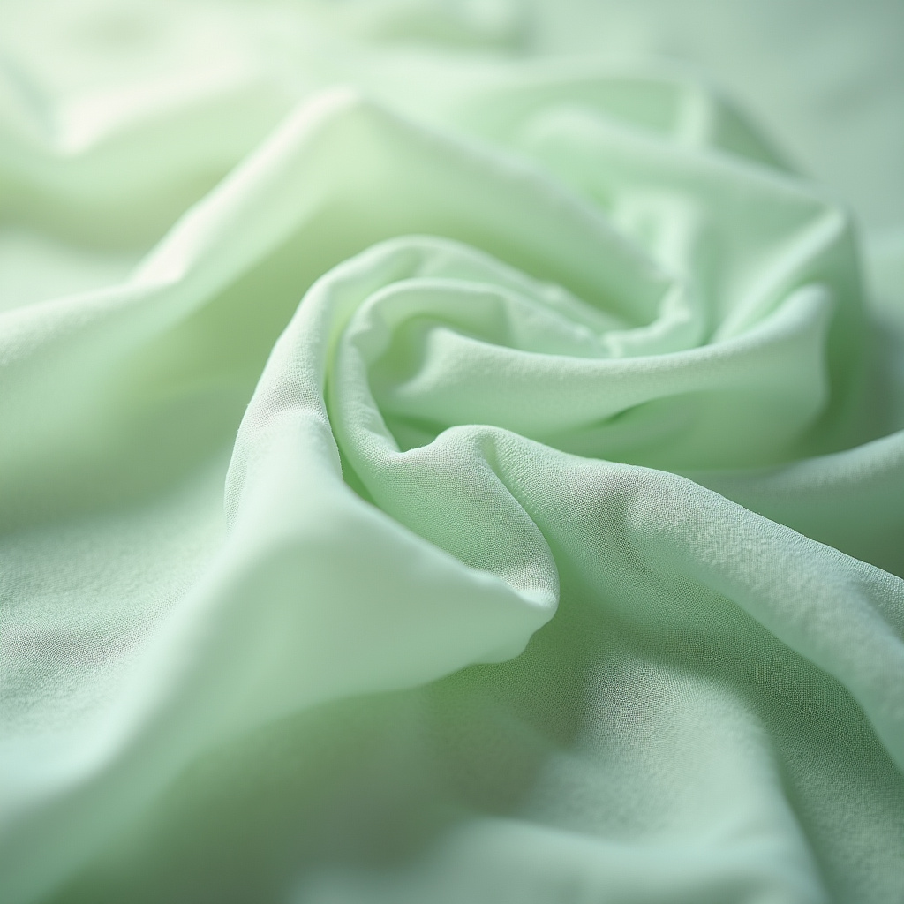
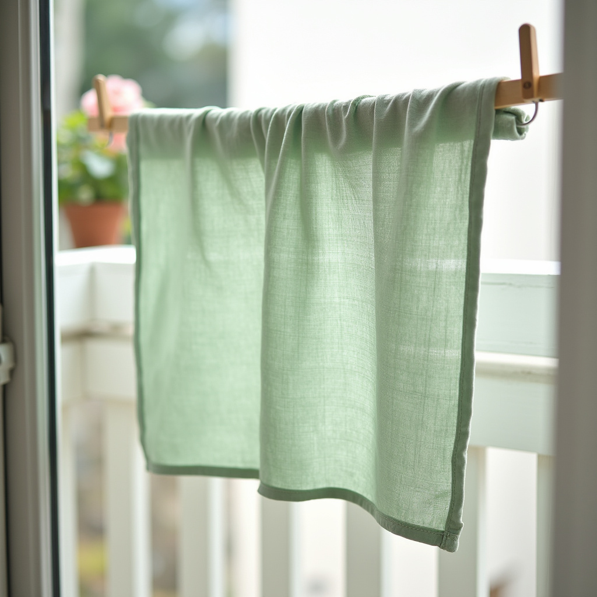
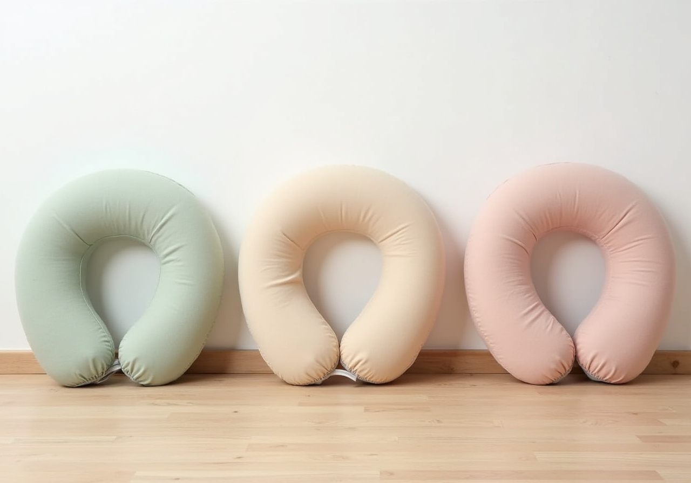

1日に何度もくり返す授乳で
その疲れ、赤ちゃんの高さが
合っていないことが原因かもしれません。
中のパッドを抜き差しするだけ。
ママの体格にも、赤ちゃんの成長にも。
綿100%で、赤ちゃんの肌にふんわり。
外して洗濯機で洗えます。
おすわりのサポートや腰当てに。
長く使えるから、出産祝いにも。
赤ちゃんの口が、ママの胸の高さに来ると
腕で持ち上げなくてよくなります。
ソファでもベッドでも、座る場所に合わせて高さを選べます。パッドはファスナーを開けて出し入れするだけです。


吐き戻しやミルクの汚れも気にせず使えます。洗うほどに、やわらかくなじみます。
ご注意ください 寝かしつけやうつぶせ寝には使わないでください。おすわりサポートとして使うときは、必ず大人がそばで見守ってください。

| サイズ | 約 幅58 × 奥行48 × 高さ17cm （調整パッドを抜くと高さ約14cm） |
|---|---|
| 素材 | カバー：綿100%（6重ガーゼ） 本体・中綿：ポリエステル100% |
| お手入れ | カバー：洗濯ネットに入れて洗濯機可（30℃まで） 本体：手洗い |
| カラー | セージ／オートミール／ローズ |
| セット内容 | 本体、カバー、調整パッド各1 |
のしとメッセージカードをお選びいただけます。
カートの「ラッピング」からお申し込みください。